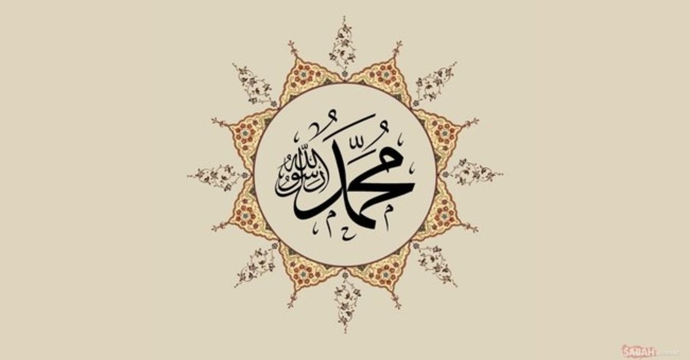

Hz Mohammed sv
doğum adıyla Muhammed bin Abdullah ; (22 Nisan 571 Mekke-i Mükerreme - 8 Haziran 632 Medine münevvere), İslam'ın kurucusu ve peygamberi olan dinî, askerî ve siyasi liderdir. Arap Yarımadası'nın tamamını ele geçirerek Müslüman hâkimiyetini tek bir yönetim altında birleştirmiş ve böylece İslam'ın kutsal kitabı olan Kur'an'ın yanı sıra, öğretileri ile uygulamalarını güvence altına alarak İslami dinî inancın temelini oluşturmuştur.
İslam
İslam veya diğer adıyla Müslümanlık, Allah'ın elçisi, resulü ve son peygamber olduğuna inanılan Muhammed aracılığıyla 610 yılında, Arabistan'ın Mekke şehrinde ortaya çıkmış ve yayılmıştır Günümüzde İslam, dünya nüfusunun yaklaşık %25'ini (1/4'ini) oluşturmaktadır ve 2 milyarı aşkın inananı ile yeryüzünün Hristiyanlıktan sonraki ikinci kalabalık dinidir,Peygamberi Muhammed, İslam dinini yaymasının yanı sıra siyasi ve askeri bir yapılanmaya da gitmiş ve Medine'de İslam Devleti'ni kurmuştur. Daha sonraları halife ve hanedanlarca yönetilen bu devlet, zaman içerisinde bir imparatorluğa dönüşmüş ve bu devletin bölünmesiyle birlikte dünyanın farklı bölgelerinde yeni Müslüman devletler ortaya çıkmıştır.
peygemberimizin bazı hadisleri
“Kim bir hayra delâlet ederse onu işleyen gibi ecir alır.” (Beyhakî)
“Ben güzel ahlâkı tamamlamak üzere peygamber ba’s olundum (gönderildim).” (Buhârî, Müslim)
Müslüman, insanların elinden ve dilinden emin olduğu kimsedir. Tirmizî, Îmân, 12; Nesâî, Îmân, 8.
"Hoş gör ki, hoş görülesin." (İbn Hanbel, 1/249)
“İşlerin hayırlısı ortalarıdır. Yani ifrat ve tefritten âzâde (aşırılıktan uzak), mu’tedil (orta) olandır.” (Beyhakî)
“Temizliğe itinâ ve devamlılık, insanı tam bir îmâna da’vet eder.” (Taberânî)